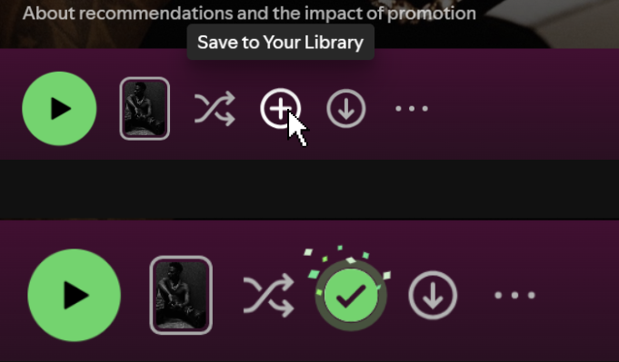
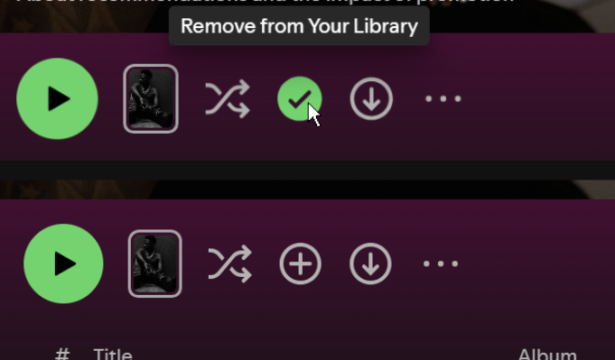

Spotify
URL: https://open.spotify.com
Save Playlist to Your Library (Plus/Check) Button
Located on playlist headers/action bars (next to the main Play button) while viewing a playlist. It is a plus sign with a circle around it
TRIGGERS
- Hover On
- Hover Off
- Click On
- Click Off
RULES
Hover On (Unsaved State)
- Cursor changes to a hand icon.
- Text saying "Save to Your Library" appears near the button.
- Plus icon changes from gray to white.
Hover Off (Unsaved State)
- Cursor changes back to a normal arrow.
- Text disappears.
- Plus icon turns back to gray.
Click On (Save to Library)
- Plus icon (+) turns into a green checkmark (✓).
- A small burst of green and white stars pops out around the button.
- Text changes to "Saved to Your Library".
- The playlist is added to the user's library sidebar.
Hover On (Saved State)
- Cursor changes to a hand icon.
- Text saying "Remove from Your Library" appears near the button.
- Green checkmark icon stays green and brightens slightly.
Hover Off (Saved State)
- Cursor changes back to a normal arrow.
- Text disappears.
- Green checkmark icon stays green.
Click Off (Remove from Library)
- Green checkmark icon (✓) turns back into a gray plus icon (+).
- Text changes to "Save to Your Library".
- The playlist is removed from the user's library sidebar.
FEEDBACK
Hover On
- Cursor becomes a hand pointer.
- Small text box appears ("Save to Your Library" or "Remove from Your Library").
- Icon lights up (gray to white or bright green).
Hover Off
- Cursor becomes a normal arrow.
- Text box goes away.
- Icon color goes back to normal.
Click On
- Icon changes from gray plus (+) to green checkmark (✓).
- Checkmark pops and scales up briefly.
- Green and white stars burst around the icon.
- A message pops up at the bottom left: "Added to Your Library".
Click Off
- Icon changes from green checkmark (✓) back to gray plus (+).
- A message pops up at the bottom left: "Removed from Your Library".
LOOPS/MODES
- Binary Toggle Mode: Switches back and forth between Unsaved (Plus icon) and Saved (Green Checkmark icon).
VISUALIZATION
Hover on and clicked state that shows little stars


After hovering over checkmark, tooltip to remove from library

White text after removed from library